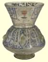

| |
The events and courses below are aimed at an adult audience and include talks, practical sessions, films and study sessions. They are suitable for beginners to the subject and those with more in-depth knowledge.
Adults
|
People of the Red Sea
Saturday 30 October, 10.00 – 17.00, Clore Education Centre, BP Lecture Theatre £28, BM Friends £25, concessions £18, 300 places
In a series of talks by international speakers, the Red Sea study day will explore the people of the region. Papers will focus on Roman and Troglodyte interaction,Aksumite and post-Aksumite Ethiopia, Islam and Christianity,Crusaders in the late 12th century AD,Al-Qusayr and the French expedition to Egypt,magical practices, and travellers on the Red Sea. Organised in association with the Society for Arabian Studies. Also book online. |
|
The Archaeology of Islam
Saturday 26 February, 10.00 – 17.00, Clore Education Centre, BP Lecture Theatre, £20, BM Friends £17, concessions £10, 300 places
Islam leaves distinctive cultural remains which can be described, tested and used to indicate the presence of Islam in the archaeological record. Speakers will consider evidence drawn from across the Islamic world from the 7th century AD to the present. Organised in association with the University of Manchester. Also book online |
Dream makers of the Nile
Saturday 15 January, 13.00 – 17.00, Clore Education Centre, Stevenson Lecture Theatre, £15 , concessions £10, 150 places Youssef Chahine has been making films since the 1950s and is one of the most eminent Egyptian directors.This study session provides an overview of Egyptian and Arab world cinema as well as an opportunity to view Chahine’s work.
Tutor:Iman Hamam
Further information and booking through Birkbeck: Telephone Carol Watts on 020 7631 6652 or ce.watts@bbk.ac.uk |
First Encounters: the Mamluks
Saturday 29 January, 10.00 – 13.00, Clore Education Centre, Stevenson Lecture Theatre, £14, BM Friends £12, concessions £10, 50 places The Mamluks defeated the Mongols and pushed out the last of the Crusaders to establish a hold on Egypt and Syria that was to continue until 1517 and the rise of the Ottomans. Discover the history of these ‘slave soldiers’, their fascinating hierarchical social system, and their impressive artistic legacy,which includes sculptural architecture, enamelled glass and inlaid metalwork. For beginners to the subject. Includes time in the gallery. |
David Roberts and Louis Haghe
Saturday 9 April, 14.00 – 16.00, Clore Education Centre, Sackler Room, £15, concessions £10, 25 places An art in focus session with Hilary Williams. David Roberts, famous for his views of the Middle East,was supported by Louis Haghe, the lithographer, in creating his successful series of views which have become so familiar.We look at the method of production and the amazing endeavours which grew out of their travels.
Tutor:Hilary Williams |
David Roberts and Louis Haghe
Saturday 9 April, 14.00 – 16.00, Clore Education Centre, Sackler Room, £15, concessions £10, 25 places The distinctive forms of early Kufi and Fatmid Kufi scripts have been used throughout the Islamic world and have been highly influential within Arabic calligraphy. In this practical course students will learn how to write and colour Kufi script.This course is suitable for students of all levels and abilities.
Tutor: Mustafa Ja’far
Further information and booking through Birkbeck: Telephone Carol Watts on 020 7631 6652 or ce.watts@bbk.ac.uk |
Islamic Art and Architecture: problems and trends
24 Thursday evenings from Thursday 23 September, 18.30 – 20.30, Clore Education Centre, Sackler Room, £162, concessions £82, 25 places This course covers both a general introduction to the major artefacts and monuments of the Islamic world from AD 600, and a specific study of themes and issues that historically contextualise this material. Simultaneously it considers the numerous cross-cultural influences and artistic exchanges to understand the eclecticism and regional diversity present in the art of the Islamic lands.
Tutor:Tehnyat Majeed
Further information and booking through Birkbeck: Telephone Carol Watts on 020 7631 6652 or ce.watts@bbk.ac.uk |
Nationalism and gender in Arabic Cinema
11 Monday evenings from Monday 10 January, 18.30 – 20.30, Clore Education Centre, Claus Moser Room, £82, concessions £43 Through an examination of cinema from the Arab world, including Egypt,Tunisia, Lebanon and Palestine, students will develop a knowledge and understanding of the various critical approaches and genres.We will discuss issues relating to gender, the body and performance, and study the relationship between the national and global in terms of politics and identity.This course includes Saturday
half day, Dream Makers of the Nile on 15 January.
Tutor:Iman Hamam
Further information and booking through Birkbeck: Telephone Carol Watts on 020 7631 6652 or ce.watts@bbk.ac.uk |
|

|
|


KS2 At a glance
download our pdf for an overview of all resources and events about ancient Egypt for KS2.
|
|
|